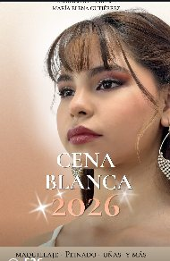
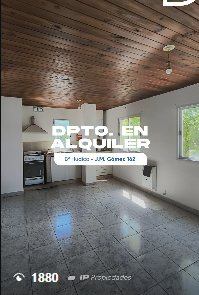
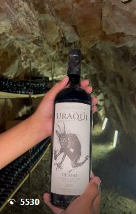
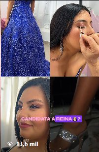
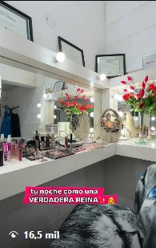
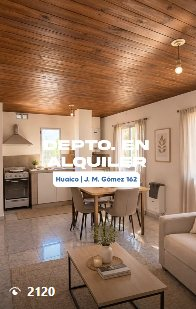
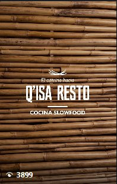
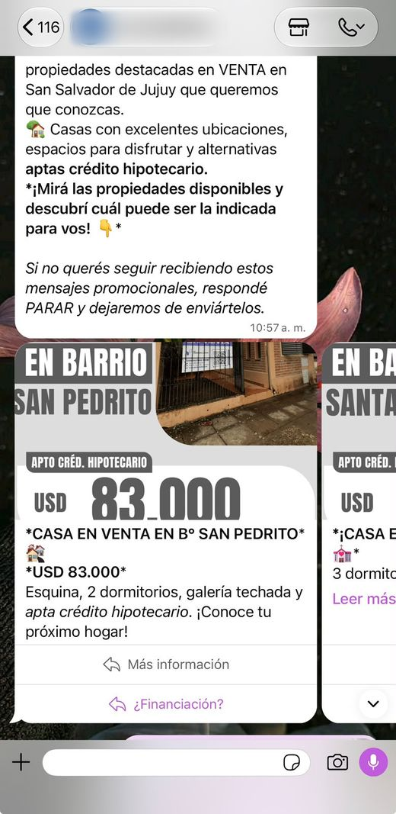

Recorridos de atención
Un menú inicial guía a cada persona según lo que necesita y la acompaña hacia la información relevante.
- Saludo de bienvenida
- Selección del motivo de consulta
- Información y siguiente paso
COMUNICACIÓN DIGITAL · PORTFOLIO
Community Manager | Automatizaciones y Meta Ads
Soy Florencia. Conecto contenido, automatizaciones y landing pages con IA para que tu marca se vea mejor, atienda con claridad y simplifique su trabajo de todos los días.
Prioridad freelance · Trabajo remoto y/o presencial



ESTRATEGIA, DISEÑO Y TECNOLOGÍA
Desde el primer contenido hasta la consulta: herramientas que trabajan juntas para simplificar tu día.
Gestión de redes, planificación, diseño y edición de reels con una identidad coherente.
Explorá mis trabajos ↗02 / AUTOMATIZACIONESBots y recorridos en WhatsApp con ManyChat y Kommo para organizar la atención.
Mirá cómo funcionan ↗03 / LANDING PAGES + IAPáginas que presentan tu propuesta y conectan las consultas con tus canales de atención.
Conocé el servicio ↗01 / CONTENIDO EN ACCIÓN
Reels editados para marcas de estética, real estate y experiencias gastronómicas y vitivinícolas. Mirá cada pieza en su publicación original.
reproducciones acumuladas en contenidos de las marcas gestionadas.Dato informado del período de gestión. No corresponde a una sola pieza.

EDICIÓN AUDIOVISUALEstética IntegralleVer reel ↗
EDICIÓN AUDIOVISUALEstética IntegralleVer reel ↗EDICIÓN AUDIOVISUALIP InmobiliariaVer reel ↗
EDICIÓN AUDIOVISUALIP InmobiliariaVer reel ↗
EDICIÓN AUDIOVISUALViñas de UquíaVer reel ↗EDICIÓN AUDIOVISUALViñas de UquíaVer reel ↗02 / ATENCIÓN DIGITAL
Diseño flujos con ManyChat y Kommo para organizar consultas, presentar opciones y facilitar la derivación comercial en WhatsApp.
Un menú inicial guía a cada persona según lo que necesita y la acompaña hacia la información relevante.
Plantillas comerciales con tres slides, cada una con un enlace o botón de respuesta, para presentar alternativas dentro de la conversación.

03 / META ADS
Planifico y configuro campañas a partir de los objetivos de tu marca: públicos, mensajes, presupuesto y métricas para tomar decisiones con criterio.
Definir qué se busca lograr, a quién hablarle y cómo segmentar.
Preparar mensajes, piezas, ubicaciones, presupuesto y duración.
Según el objetivo: CPM, CPC, CTR y costo por mensaje para evaluar y ajustar después del lanzamiento.
LANDING PAGES CON INTELIGENCIA ARTIFICIAL
Creo landing pages con apoyo de IA para presentar tu marca, tus servicios o tus capacitaciones en un solo lugar, con un diseño pensado para celular.
Podemos conectar la página con WhatsApp y tus flujos de atención para orientar consultas y reducir tareas repetitivas.
04 / SOBRE MÍ
Soy Community Manager y estudiante avanzada de Comunicación Social en la Facultad de Humanidades y Ciencias Sociales. Combino estrategia, producción audiovisual y atención digital para acompañar a marcas en su comunicación cotidiana.
Mi experiencia en atención al cliente también me ayuda a pensar cada conversación desde las necesidades de quien consulta.
Ver trayectoria completa en PDF ↗Planificación, producción de contenido, gestión de consultas y automatizaciones.
Community management. Desarrollo de chatbot para Muskuy.
Gestión integral de comunicación, redes, contenido audiovisual y WhatsApp Business.
Gestión de redes y creación de contenido durante el período de trabajo.
Asesoramiento, resolución de consultas y registro de información.
FORMACIÓN CONTINUA
Meta Ads · Academia de Marketing Digital / Paula Luzzi
Publicidad en redes sociales · Santander Open Academy
Meta Blueprint · Advantage+ y tecnologías de Meta
TAMBIÉN DOY CAPACITACIONES
Capacitaciones personalizadas en redes para emprendedores. Aprendizaje práctico sobre tu propia cuenta.
HAGAMOS EQUIPO
Contame qué necesitás. Podemos trabajar en un proyecto freelance o conversar sobre una propuesta para tu equipo.
florenciacgutierrez60@gmail.com